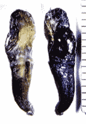

NIDS analyzes ET's toenails left on bedroom floor → Surprising result

Article History
(2016-09-03) Addition (2016-08-28) Additions (2015-08-28) Addition (2015-03-19) Addition (2015-03-14) Created
(2015-03-14 begin)Introduction
- In a past article just a few days ago, I introduced a case in which an ET appearing in a bedroom in an abduction case was a hallucinogenic projection (or an image projected to look exactly like reality). Karla Turner : An amazing example of ET-induced hallucinogenic projection - The following is a case study in the opposite direction, which shows that abduction cases are not always straightforward. - This is the testimony of Jordan Maxwell, originally taken by Roger Leir.Summary
- The title topic begins at 8:40. - The following is the experience of a man who worked in the fire department investigating the cause of fires. He shared his experience with Roger Leir, who is well known for his work on ET abduction and implantation. - One night, a reptilian ET entered their bedroom through the wall. He and his wife witnessed it. When the ET came in, the wall was rippling like the surface of the water; when the ET went through, the wall went back to normal. The ET did nothing to harm them, but looked at him and his wife, walked around the bedroom, and left through the wall again. Even when that ET left, the wall became like the surface of the water. - After this experience, to confirm that the ET was not a hallucination, he put aluminum foil on the carpet in his bedroom and covered it with a towel of the same color as the carpet; he thought that if the ET was not a hallucination, his weight should leave footprints on the foil when he walked around. - A few nights later, the reptilian ET appeared again, as before, and walked around the bedroom before leaving. - When he checked the aluminum foil later, he found ET's footprints. The footprints were three-toed. He also found a piece of ET's nail on the carpet. - He gave the nail to Roger Leir, who had it examined by a government laboratory and found that the nail tissue was still alive and growing.interview video (14:00)
・Jordan Maxwell tells Reptilian Stories (2015.03.14 end)
(2015.08.28 begin) - The following is a photo of what appears to be a nail left in the bedroom by ET as described above. NIDS, which was well known for its Skinwalker Ranch project, has reportedly conducted a detailed investigation, including DNA analysis. It is stated that the results will be published in a peer-reviewed paper. However, it appears that the project has been suspended.Other physical evidence has also been collected by clever means…the 'aliens' don't appear to be above subterfuge on the part of their earthly victims. Footprints were captured on aluminum foil, and a claw complete with 3 hairs left behind. It's currently undergoing DNA analysis, we were told, with the likelihood of peer-reviewed publication to follow. ref: http://www.ancientwisdom.net/speakers/leir/rogerLeir.html(2015.08.28 end)
(2016-08-28 begin)Introduction
- In the podcast interview below (broadcast in 2003), the late Roger Leir (a doctor famous for his work in implant removal) details a rather surprising turn of events in this case.Excerpt
- This topic starts around 4:00. - At 11:00 NIDS (The National Institute for Discovery Science) was involved in the DNA testing of this "ET nail". Several research institutes conducted the research. As a result, it was found that the DNA was not from the earth. In other words, it does not exist in the gene database. - At 20:20 They decided to submit the paper to a peer-reviewed journal. Before doing so, however, a member of the NIDS suggested that they also test the RNA just to be sure. - At 21:00 The RNA was tested. The RNA matched the one in the gene database. The RNA was a 97% match to that of a New Zealand slug. It was a 94% match to a sea slug. - There is one odd thing, though. The slugs in the vicinity of the site were at most half-inch in size, but this slug was 3/4 inch long in its mummified state. How could a New Zealand slug have been found at the site? Did the ET, sensing that footprints were being collected, leave them behind with the intention of hooking a human?Podcast（2:27:32）
・Art Bell Radio - The True Origin Of Mankind - GOD, Man & E.T. (2016-08-28 end)
Thanks
Translated with www.DeepL.com/Translator (free version)
(2022-09-27 translate)
First published article (Japanese)
寝室に出現する ET が幻覚や投映映像ではなく、実在した生物である証拠 （全体＋追加3） (2016-09-03)